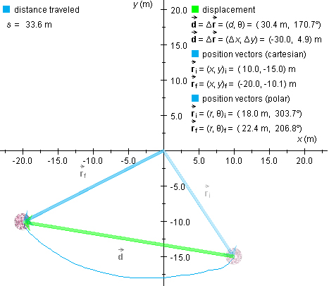

Displacement

The diagram shows a ball that has been moved from the initial
position  i =
(x,y)i = (10.0,-15.0) m to the final
position f =
(x,y)f = (-20.0,-10.1) m along the curved
path shown in blue. The displacement of the ball is a
vector pointing from the initial to the final position. It
is represented in the diagram by a green arrow.
i =
(x,y)i = (10.0,-15.0) m to the final
position f =
(x,y)f = (-20.0,-10.1) m along the curved
path shown in blue. The displacement of the ball is a
vector pointing from the initial to the final position. It
is represented in the diagram by a green arrow.
The symbol for displacement is  . The displacement of an object is a measure of how
much the position of the object has changed, and, as the diagram
illustrates, it is equal to the change in the object's position
vector,
. The displacement of an object is a measure of how
much the position of the object has changed, and, as the diagram
illustrates, it is equal to the change in the object's position
vector,
= f - i.
The magnitude (absolute value) d of the displacement is
equal to the straight-line distance from the initial to the final
position (represented by the length of the green arrow in the
diagram above). If you write the letter d without an arrow
above it, it denotes this magnitude, not the displacement
vector. If you mean the vector, don't forget to include the
arrow above the letter.
In the case illustrated above, the magnitude d of the
displacement has the value
d = 30.4 m .
This straight-line distance between the initial and final
position of the ball must be distinguished from the distance
traveled by the ball, which is measured along the actual path
taken by the ball, the blue curve in the diagram. Here, the
distance s traveled is equal to
s = 33.6 m .
The distance traveled is greater than the magnitude of the
displacement whenever the path traveled is not straight and
uni-directional.